Завести команду и позвать игроков
Что сделать
- Войди через Telegram.
- Если команды ещё нет, нажми «Создать команду», напиши название и нажми «Отправить». Заявку одобряет владелец PBTH, обычно в тот же день.
- Когда заявку одобрят, команда откроется сама, а в Telegram придёт сообщение. Ты станешь её капитаном.
- Открой «Команды» и нажми строку «Пригласить».
- Отправь ссылку команды в чат кнопкой «Поделиться» или покажи QR-код. Для ввода руками есть код команды.
- Принимай заявки: кнопкой «Принять» в сообщении бота или на экране «Заявки».
Что получится
Игроки попадут в состав по одной ссылке. Личные приглашения рассылать не нужно.
Нажми «Отозвать и выпустить новую»: старая ссылка и её QR перестанут работать сразу, а новую придётся разослать заново.
Создать событие
Что сделать
- Нажми зелёный «плюс» на нижней панели.
- Выбери вид события: тренировка, сбор, турнир, чемпионат, спарринг, «ТО маркеров» или другое.
- Напиши название, укажи дату, время начала и место.
- Если событие повторяется, включи «Повторять», выбери дни недели и дату, до которой повторять, — создастся сразу несколько событий.
- При необходимости укажи стоимость с человека и заметку.
- Нажми «Создать событие».
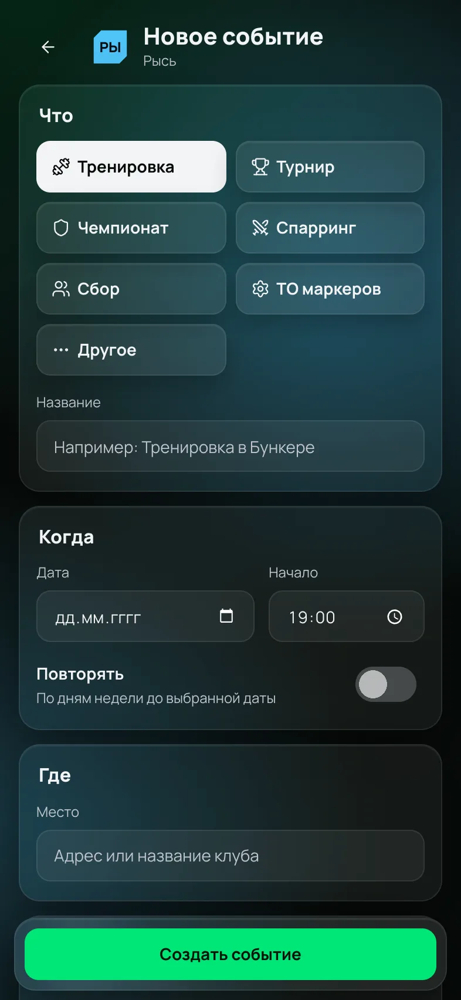
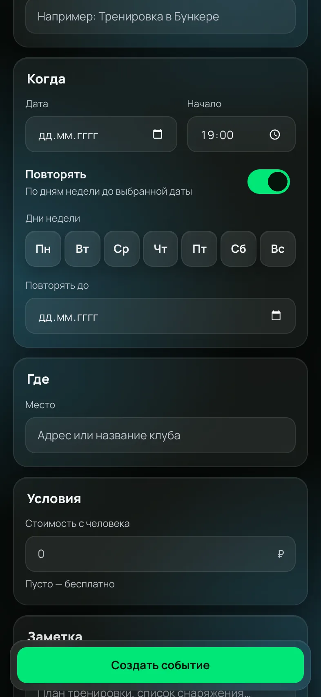
Что получится
Событие появится у участников команды. Они увидят место и время и смогут сообщить, придут они или нет. Через три минуты после создания игрокам придёт сообщение с кнопками «Иду / Не иду». Запасным автоматические сообщения не приходят — их можно позвать кнопкой «Напомнить». О переносе и отмене события бот сообщает тем, кто идёт, сам.
Проверить, кто придёт
Что сделать
- Открой нужное событие.
- Посмотри ответы участников в блоке «Идут»; «Не ответили» и «Не идут» раскрываются по нажатию.
- Нажми «Напомнить», чтобы написать тем, кто не ответил.
- В блоке «Кому дошло» проверь, кому напоминание доставлено.
- Если время или место изменились, нажми «Изменить» и отредактируй событие.


Что получится
У тебя будет актуальный список участников, а команда увидит последние изменения. На напоминание игроки отвечают кнопками «Иду» и «Не иду» прямо в Telegram.
В «Ещё» под кнопками панели — «Напоминание по выбору» (например, об игре из расписания) и «Удалить событие».
Добавить игры и записать счёт
Что сделать
- Открой событие.
- Найди раздел «Расписание игр».
- Нажми «Добавить».
- Укажи время, соперника, пару и пит-зону.
- После окончания игры нажми на её строку и запиши счёт. Результат нашей команды всегда указывается слева. Например,
4:3означает, что наша команда выиграла четыре игровых отрезка, а соперник — три.

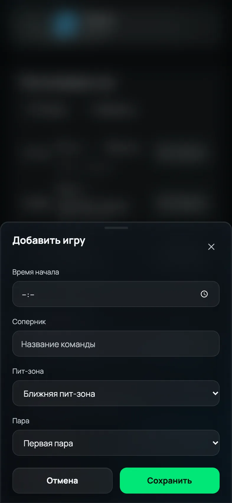

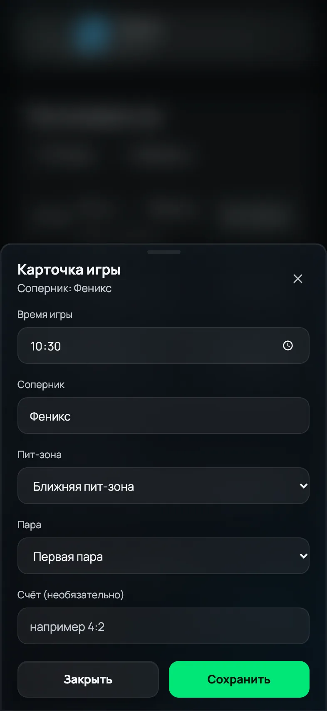
Что получится
Результат игры сохранится в событии. На его основе приложение создаст список игровых отрезков для дальнейшего разбора.
Указать порядок выигранных и проигранных отрезков
В приложении отдельный отрезок игры называется пойнтом. Например, игра со счётом 4:3 состоит из семи пойнтов.
Что сделать
- Нажми «Пойнты» рядом с нужной игрой.
- Для каждого пойнта нажимай на значок слева: он переключается «—» → «W» (выиграли) → «L» (проиграли) → снова «—».
- Проверь, что количество побед и поражений совпадает со счётом игры: приложение напишет «Разметка сходится со счётом».
- Значком с людьми отметь, кто вышел на этот пойнт, и укажи, сколько было у соперника.

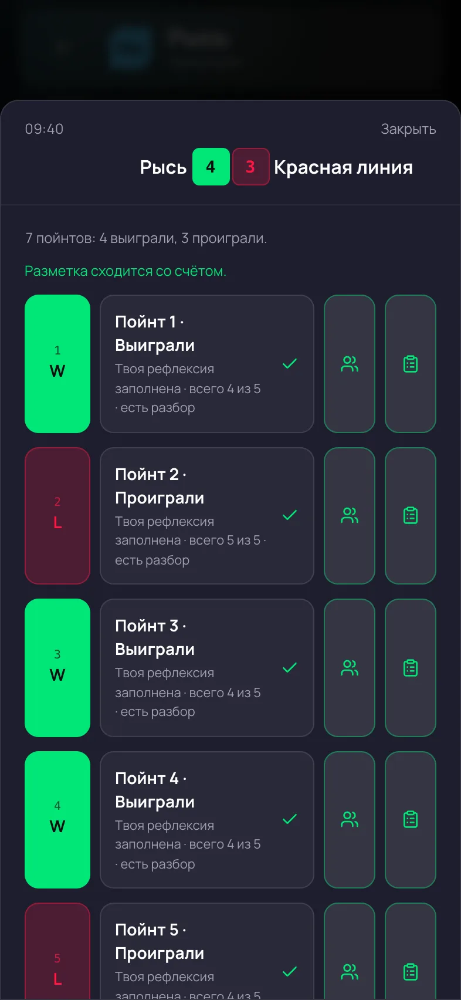

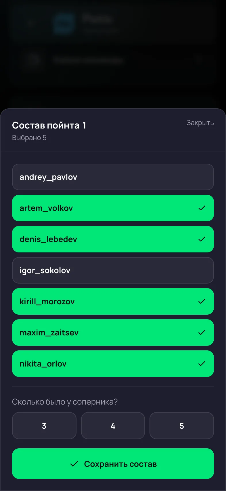
Что получится
Будет виден реальный ход игры: в каком порядке команда выигрывала и проигрывала. Игрок, которого нет в составе пойнта, рефлексию за него не заполняет.
Добавить заметки капитана
Что сделать
- Нажми значок разбора справа у нужного пойнта.
- Выбери комбинацию, которую разыгрывали, — это тактика, которую использовала команда.
- Отметь, как начинали игру мы и соперник: узкая или широкая разбежка.
- Оцени составы после разбежки и нажми «Дальше».
- Отметь, кто первым занял ключевые укрытия, и добавь короткую заметку: что получилось и что нужно изменить.

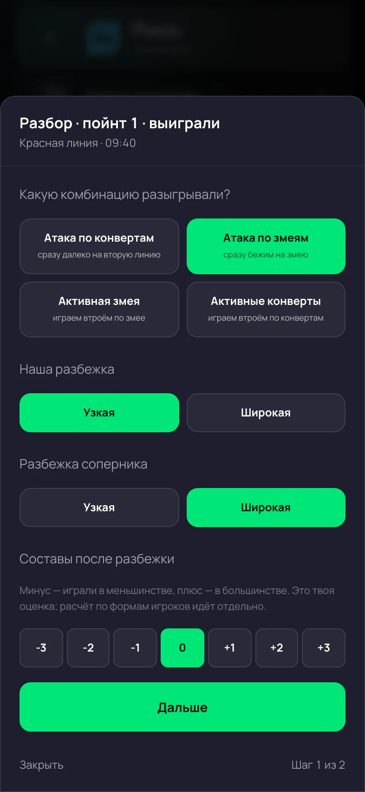
Что получится
Наблюдения капитана попадут в общий разбор события и помогут подготовить следующую тренировку.
Посмотреть итоговый разбор события
Что сделать
- Открой событие.
- В разделе «Расписание игр» нажми «Разбор».
- Открой вкладку «Итоги».
- Посмотри:
- общий результат;
- как менялся результат по ходу игр;
- где и на каком этапе чаще выбывали наши игроки;
- какие варианты начала игры приносили лучший результат;
- какие тактические решения работали лучше;
- достаточно ли команда заполнила данных для надёжных выводов.
- Подробности по каждому пойнту — на вкладке «По пойнтам». Кнопка «Отправить в чат» пришлёт таблицу файлом.

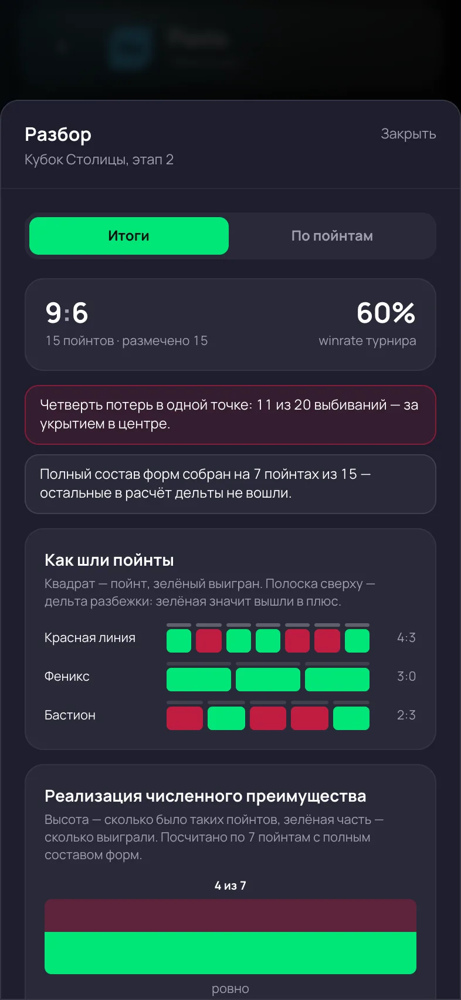

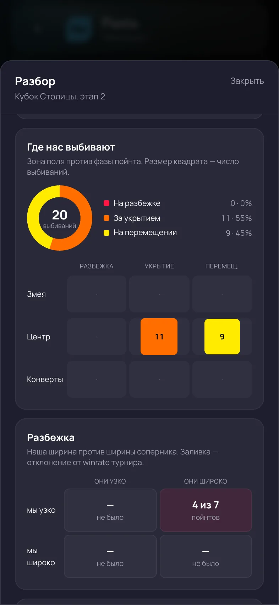
Что получится
Ты увидишь сильные и слабые места команды и сможешь выбрать конкретные задачи для следующей тренировки.
Вести деньги команды
Что сделать
- Открой «Команды» и нажми строку «Казна».
- После события нажми «Записать трату», напиши название и сумму и нажми «Списать».
- Проверь должников и историю операций. Кнопка «Напомнить» пишет должнику, «Напомнить всем должникам» — всем сразу.

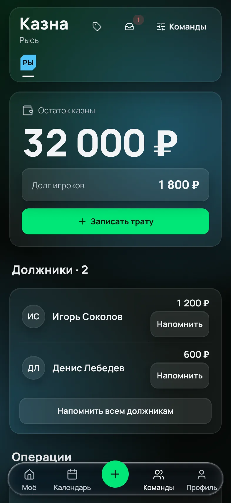

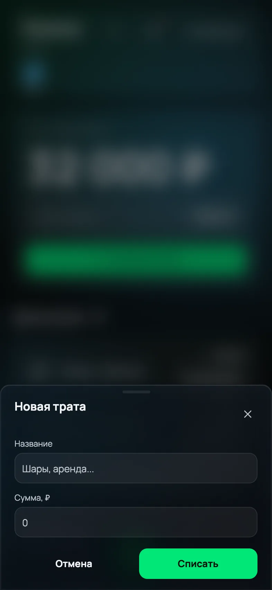
Что получится
Будет понятно, сколько команда потратила и кто ещё не заплатил. Расчёт сбора по событию и отметка платежей пока недоступны.
Вести состав команды
Что сделать
- Нажми «Пригласить» и отправь ссылку команды.
- Прими заявку нового участника в разделе «Заявки».
- При необходимости сделай участника тренером: открой его карточку и в блоке «Роль в команде» выбери «Тренер».
- При необходимости измени его статус: «В строю», «В резерв», «Травма», «Отпуск». Это быстрее всего через «⋯» у имени в составе.


Что получится
В приложении будет актуальный состав команды с правильными ролями и доступами.
Строка «Журнал команды» показывает последние действия: кто что сделал и когда. Из карточки игрока можно и исключить его из команды — приложение спросит подтверждение.

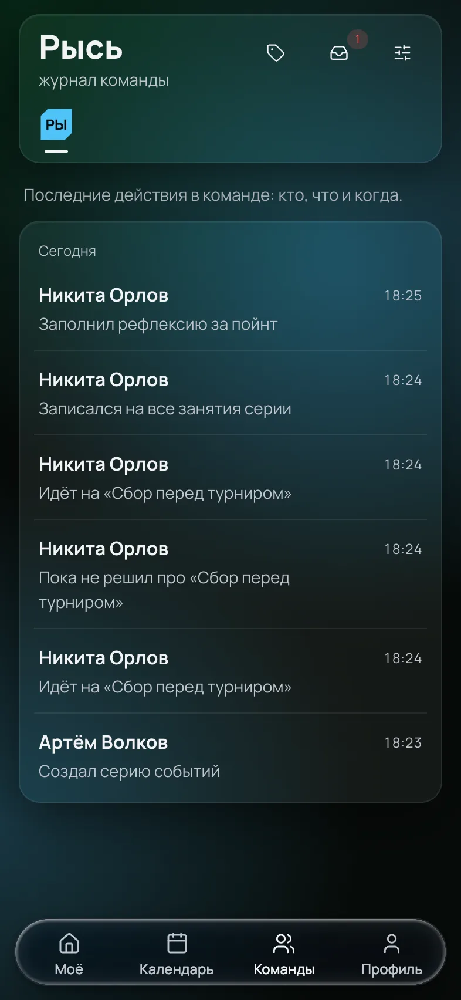
Открыть свободные слоты
Что сделать
- Включи «Открытое расписание» в команде — строкой на экране команды или кнопкой в блоке «Свободные слоты» на событии.
- Открой событие, на которое не хватает игроков.
- В блоке «Свободные слоты» укажи, сколько мест свободно и цену за место.
- Нажми «Открыть слоты».

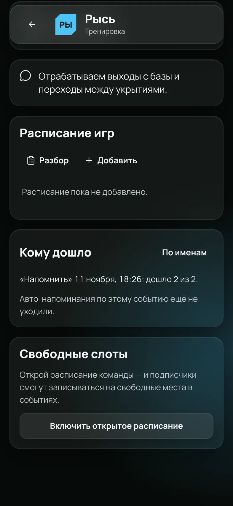

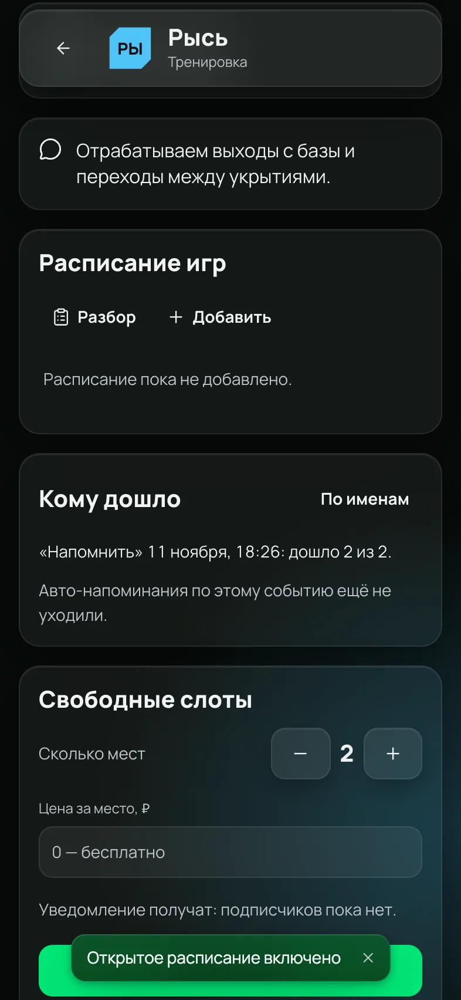
Что получится
Подписчики команды получат уведомление и смогут записаться одним нажатием. О каждой записи тебе придёт сообщение с кнопкой «Снять».
Когда места не нужны, нажми «Закрыть запись»: записанные гости останутся, новые записаться не смогут.
Короткая памятка капитана
- В начале: получить команду, отправить ссылку и принять заявки.
- Перед событием: создать событие, проверить ответы команды и напомнить тем, кто молчит.
- Перед играми: добавить расписание и соперников.
- После каждой игры: внести счёт и указать порядок побед и поражений.
- После события: добавить заметки и посмотреть итоговый разбор.
- По деньгам: внести расходы и проверить долги.
- По составу: пригласить участников и проверить их роли.
- Если не хватает игроков: открыть свободные слоты.